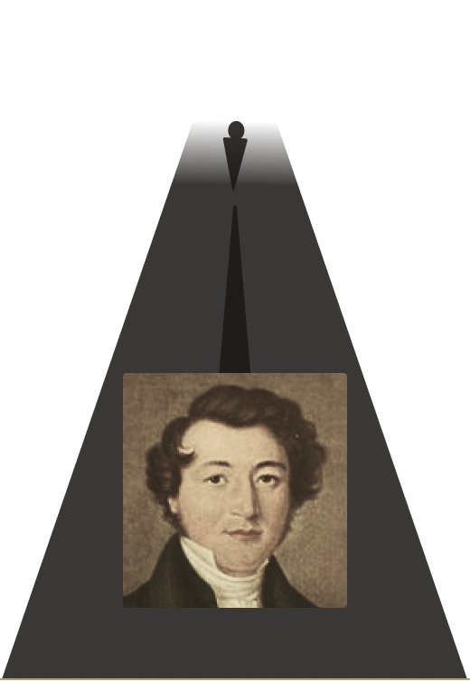
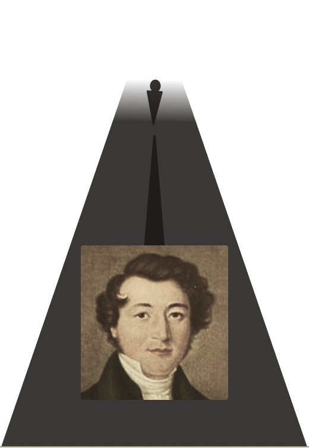

- EN
- NL
- FR
Learn about the Harmonica


Harmonica
the evolution of


Harmonica
the evolution of
About the harmonica
The harmonica, also known as a mouth organ, has come a long way since its invention in Europe.
Many clever inventors and craftsmen contributed to its evolution over time, but one person stands out as the true mastermind behind its widespread popularity.
Section China
chapter one
CHINA
About the Sheng instrument
a Blast from the Past
Bamboo & Beats
Long before the harmonica graced the ears of mankind, there existed an ancient instrument of Chinese origin. This instrument, known as the Sheng, was said to have been crafted by none other than the goddess Nü Wa herself - the very deity who is said to have brought humanity into existence.

It is a versatile instrument, that has been used in many different types of Chinese music, including traditional Chinese opera and folk songs. It was played by the skilled hands of musicians who had trained for years to master its intricacies, and it was loved and revered by audiences for its beautiful and otherworldly sound.
The Sheng is a type of mouth organ that was made up of several bamboo pipes of different lengths, all tied together in a small frame. Each pipe has its own specific pitch, and when the player blows into the mouthpiece, the bamboo pipes would vibrate and produce a unique and mesmerising sound.


From the... East
To the ... West
The Sheng's journey to Europe is not fully known.

However, it is believed the instrument was brought to Europe by travellers along the Silk Road
Until one day ..
Section Germany part 1
chapter two
Germany
1820

The First Harmonica
From Tool to Tune
 


Christian Frederich Buschmann, a German instrument maker, was trying to find a way to make tuning pianos easier, when he came up with an idea for a new instrument that used metal reeds and was called the Aura. It was based on a small tool called a Terpodian and could only play notes when blown into. However, this was just the beginning for the harmonica, as the Aura had yet to evolve.
Use the magnifying glass to reveal Mr.Buschmann.

Section Germany part 2
1825
About how the modern harmonica came to be
The Modern Harmonica
‘Blowin’ & ‘Drawin’
like Never Before!
With the advent of the 19th century, a remarkable innovation was brought forth upon the musical world; Joseph Richter introduced the first diatonic harmonica. This new iteration was characterised by combination of features, allowing for both blow and draw notes to be played by adding a secnd set of reeds. This marked a crucial turning point in the evolution of the harmonica, as it paved the way for the modern instrument we know today.
As the world progressed, so too did the harmonica. It became more refined, eventually taking on the form that we know and recognise today. It is characterised by its 10 holes and two reed plates, each equipped with 10 metal reeds. Depending on one's location, the diatonic harmonica may also be referred to as the "blues harp" in the West, or as the "tremolo harmonica" in the East.
Built of 21 metal reeds, the Aura had yet to evolve, as currently it could only play notes when blown.

Mass production begins
1829
;Tick Tock
it's time for a change
The clock-making business was struggling when a man named Christian Messner had a brilliant idea. He realised that the skills of his clock-making workers could be used to create harmonicas instead. So, in 1827, he set up his own workshop and kept his production methods secret for many years. But other manufacturers soon followed suit, like Christian Weiss who opened his own workshop in 1855. One of the most successful of these manufacturers was Matthias Hohner.
Experience the Sound of a Harmonica
About Hohner
chapter three
Hohner
Hohner
The true mastermind
Mattias Hohner was already known as the best clock-maker around, but in 1857, he decided to give up clocks and focus solely on making harmonicas. Although Matthias Hohner may not have been a skilled harmonica player, he possessed a natural talent for business and entrepreneurship. He started with a small team, but unlike other manufacturers, he didn't keep his methods secret and his business grew rapidly.
Back in those days, harmonicas were made entirely by hand, with each instrument made from start to finish by one craftsman. The construction of the instrument was in two parts: the body with its cells and the reed plate. The wooden bodies were roughly cut by knife and then smoothed and filed, and the air channels were cut by hand. Metal reeds were produced by flattening brass wires to the shape of the reed slots, and brass wire was also used for the rivets. The primitive instruments were produced with crude tools.
But Matthias Hohner was always looking for ways to improve the quality of the instrument. He introduced protective covers, used his full name as a trademark on the cover plates, and used mass production methods and a suitable division of labour in his manufacturing processes. He also adopted new methods like rolling instead of hammering reed plates and using brass instead of lead. In 1880, he even introduced the first steam engine into the factory to streamline production methods while still maintaining and improving the quality of the instrument.
The Musical Instrument Museum
Liked the story?
The Musical
Instrument
Museum
Welcoms You!
Located in the heart of Brussels, the MIM offers a unique and immersive experience, delving into the rich history and origins of musical instruments through a variety of interactive activities including workshops and tours.
Visit MIM